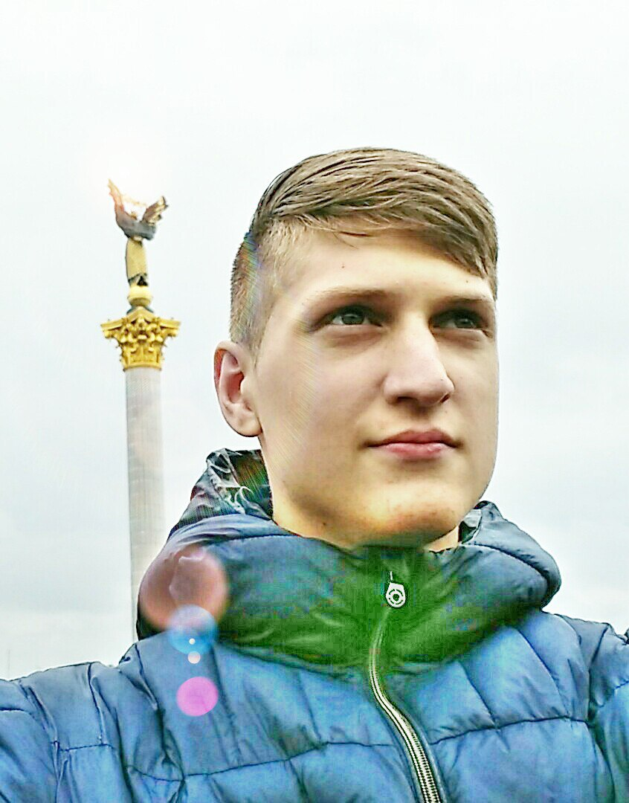

ЖУРАТ
ЖУРАТ
ІГОР
"UX / UI DESIGNER"
ПРО МЕНЕ
Народився 1 грудня 1998 р. в м. Новоселиця Чернівецької області. Неповну середню загальну освіту здобув в Динівецькому НВК. Навчання продовжив у Фінансово - економічному коледжі Буковинсьго державного фінансово - економічному університету. У зв'язку з реорганізацією БДФЕУ продовжив здобуття освіти у Коледжі Чернівецького національного університету. Сімейний стан: Неодружений. Діти: Немає. Світогляд: Християнство.
Шкідливі звичкі: Відсутні. Спортивні досягнення: Віце-чемпіон України з Універсального бою 2017 р.КОНТАКТИ
Адреса:
вул. Руська 222, м. Чернівці
Телефон:
+8 (800) 555 55 55
Email
darova@bk.com
ДОВІДКА
ЖУРАТ ІГОР
ТЫЖ ПРОГРАМИСТ - спаситель планеты
тел.: +8 (800) 555 55 55
Email: darova@bk.com
ДОСВІД
Чистка ноутбуків
2017-2017
Чистка системних блоків
2016-2017
Встановлення ОС
2010-2017
ТИЖ ПРОГРАМІСТ
Протягом професійної кар'єри було проведено обслуговування 8 ноутбуків різних виробників (Деякі з них по декілька разів).
ТИЖ ПРОГРАМІСТ
Протягом професійної кар'єри було проведено обслуговування 6 системних блоків різних конфігурацій (Деякі з них по декілька разів).
ТИЖ ПРОГРАМІСТ
Протягом професійної кар'єри було проведено встановлення ОС (збився з підрахунку).
ОСВІТА
Початкова освіта
2005-2009
Неповна середня загальна освіта
2009-2014
Молодший спеціаліст
2014-2018
Динівецький НВК
Здобуття оствіти почав у Динівецькому НВК який знаходиться в с. Динівці, Новоселицького району, Чернівецької області.
Динівецький НВК
Після дев'ятого класу торимав свідоцтво про неповну середню загальну освіту з відзнакою.
Коледж
Продовжив здобуття освіти у ФЕК БДФЕУ, який згодом був реорганізований, у зв'язку із чим навчання продовжується Коледжі ЧНУ оп теперішній час.
Hobbies

Swimming

Bowling pins
Photography